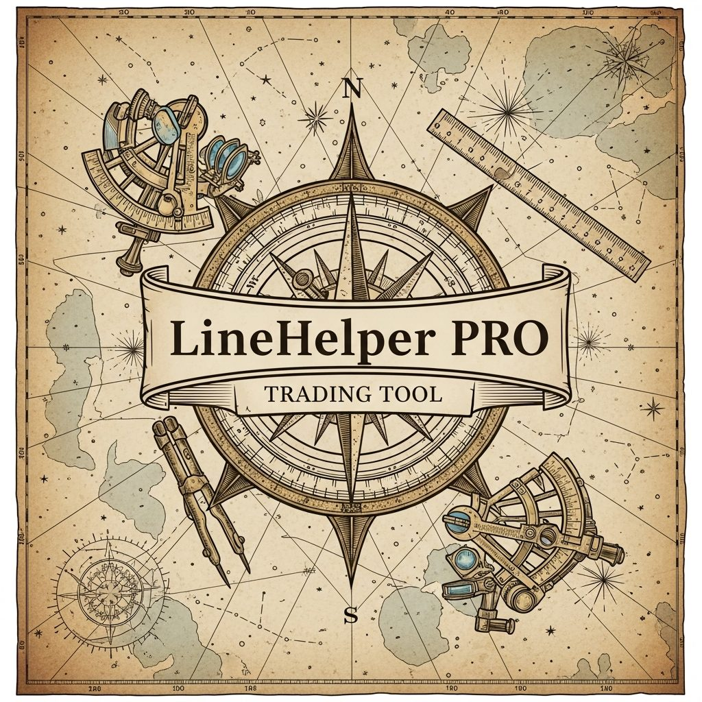

Discover how ZaliMatrix evolved from a simple tracker to a sophisticated algorithmic system that empowers traders with customizable tools.
I trade forex on cTrader in my spare time. Like most retail traders, I spent years looking for tools that matched the way I actually think about markets — price action, structure, patience. Most of what's out there is either too simple or completely opaque.
So I built my own.
ZaliMatrix started as a basic signal tracker. Over time it grew into something I use every day: a set of cBots that trade my manual setups automatically, a validation server that filters signals through 44 rule blocks and an AI model before any trade opens, and a dashboard that keeps everything under control while I'm away from the screen.
The tools work. Not perfectly — this is a hobby project running on a demo account, not a hedge fund — but well enough that I think other traders would find them useful. The price reflects that. This isn't a subscription service. You buy the file, you own it.
If something doesn't work for your setup, email me. I actually respond.
cBots for cTrader. Each one does one job — and does it without needing a server, a subscription, or an internet connection.

Draw a support or resistance zone on the chart. GapTrader watches it, times the entry, filters the spread, and fires the trade — with Telegram notification included.
Learn more →
Draw a trendline or channel. FutureTrader monitors price and trades the bounces or breakouts automatically — good for trends that run over days or weeks.
Learn more →
Compares currency strength across H4 and H1. Generates buy/sell signals based on strength gaps and trades them automatically with pullback entry and correlation checking.
Learn more →Tools that don't place trades — they make sure the other tools don't take unnecessary risks, and that every signal is worth acting on.

Watches all open positions across every pair. Tracks drawdown, checks correlation, and automatically blocks new trades when your risk limits are hit.
Get it on Payhip →
Every signal passes through 44 filter blocks — trend, session, strength, PSAR, risk — then an AI model gives a final yes or no. Runs on any VPS with a live web dashboard.
Learn more →
Draw and manage trigger lines directly on the chart. The layer that GapTrader and FutureTrader listen to — clean, fast, and built for active chart traders.
Get it on Payhip →Run the full ZaliMatrix ecosystem and every signal is guarded on its way from chart to order. Every step also works standalone — the flow is optional, never required.
Indicator & cBots spot the setup — price action, currency strength, gaps or trendlines.
The validation server scores every signal through 44 rule blocks — session, trend, strength, PSAR, risk.
An AI model makes the final call — ALLOW or BLOCK — with SL & TP calculated. Auto-fallback keeps it online.
The cBot opens the trade with SL/TP already set — one position per pair, spread and session guarded.
TradeControl Dashboard watches live PnL — break-even, close commands and Telegram alerts.
Every decision is logged — what came in, what it passed, what the AI decided. You can watch your system think.
One-time purchase — you buy the file, you own it. No subscriptions, no lock-in.
Visit the Payhip storeOne-time purchase — you buy the file, you own it. No subscriptions, no lock-in.
Visit the Payhip store